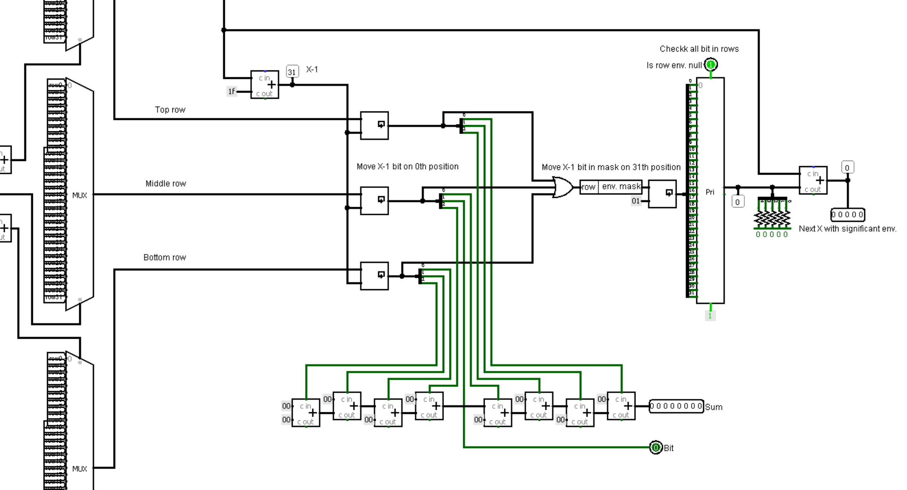
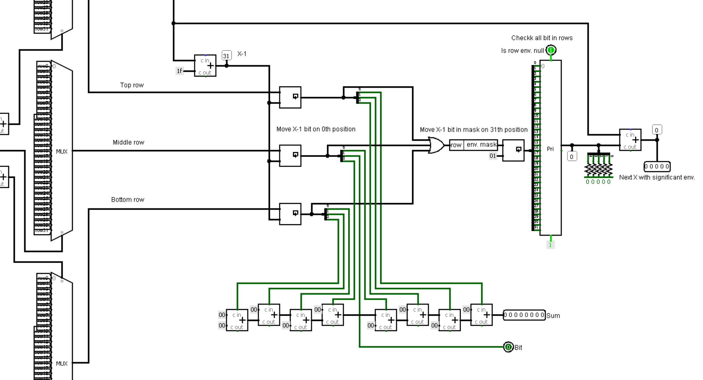
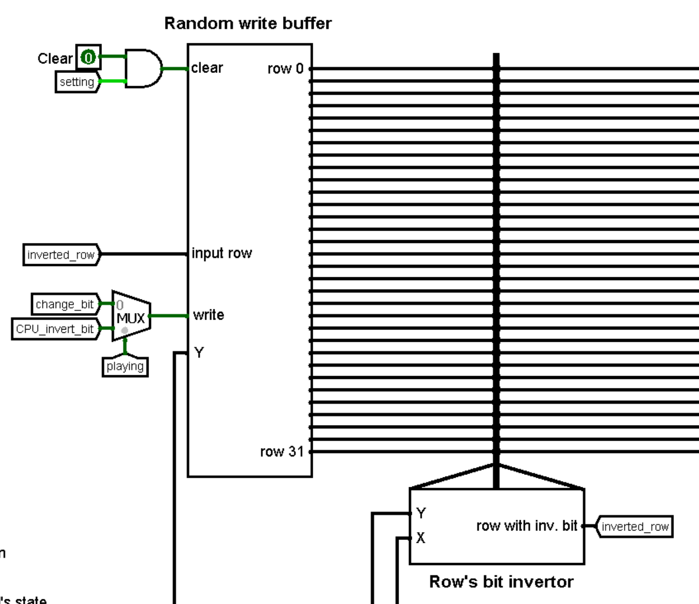
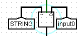
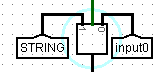
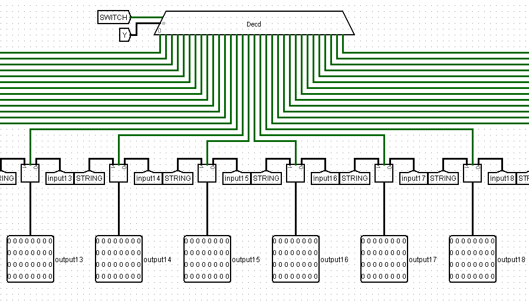
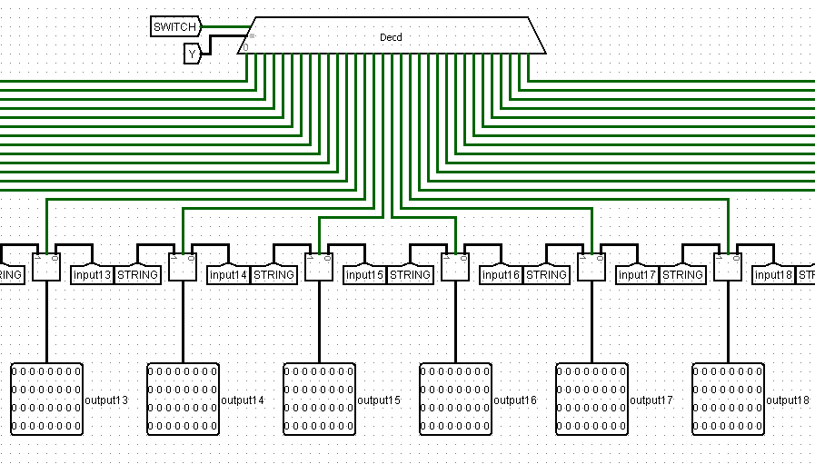

Realization of "Conway's game of life" using Logisim and Cdm-8.
"Conway's game of life" is a cellural automaton. This is a zero player game, player set an initial condition and then only can observe the development.
Rules:
We have made 2 powerful improvements and 2 concept changes from the basic technical task.
Improvements:
32*321 to 8.Concept changes:
clear input to it.Other components wasn't mentioned in basic technical project. Here you can see our addition for the technical project.
Realization of "Conway's game of life" has two main parts, Logisim part and Assembler part.
Logisim part is responsible for:
32x32. Matrix has two different colors for dead and alive cells.Assembler:
We have found 3 interesting versions of "Conway's game of life" in the Internet
16*16. Works fast but small field doesn't allow construct a lot of setups. For example "Pulsar" or "Copperhead":Our version of "Conway's game of life" works with universal sets of conditions for birth and survival.
N means that birth/survival will be fulfilled when cell has N neighbors.| KEY | DIRECTION |
|---|---|
NUM 1 / Z |
bottom-left |
NUM 2 / S |
bottom |
NUM 3 / C |
bottom-right |
NUM 4 / A |
left |
NUM 6 / D |
right |
NUM 7 / Q |
top-left |
NUM 8 / W |
top |
NUM 9 / E |
top-right |
NUM 5 / Space - change state of selected cell
When you have set initial field state press button "Simulation switch" and observe evolution! You can stop simulation and edit field at any time. But if CPU cursor has processed some cells you would get half-counted generation
If the next generation is the same as previous simulation will be interrupted with yellow LED-indicator lights up.

There are some special terms that are used in different places below:
(Y, X) environment will be [(Y-1, X-1), (Y-1, X), (Y-1, X+1), (Y, X-1), (Y, X), (Y, X+1), (Y+1, X-1), (Y+1, X), (Y+1, X+1)] with centre bit bit (Y, X) (term centre bit is meaningful only for one cell's environment)all X in range [0, 31]) Y will be full rows Y-1, Y and Y+11 (including border cells)Due to optimization reasons CdM-8 has only one main task - iteration by Y,X positions and determination whether cell should be changed. After the all cells' processing CdM-8 send signal to update generation PSEUDO WRITE register
In ASM code we use asect constants like this:
asect 8
constSample:
# ...
ldi r0, constSample # r0 sets to 8
Often we save address value to its address:
ldi r0, IOAddr
st r0, r0
The reason for this action is PSEUDO WRITE mode for some I/O registers
0xd0 - flag for checking non-static generation0xe0 - birth's conditions first byte0xe8 - death's conditions first byteStack initial position - 0xe0
# Internal data addresses
asect 0xe0
birthConditionsRowStart:
asect 0xe8
deathConditionsRowStart:
asect 0xd0
isNonStaticGeneration:
Cells from 0xf0 to 0xff are allocated for I/O registers.
See detailed description in Logisim topic
# Asects for I/O registers
asect 0xf0
IOGameMode:
asect 0xf1
IOBirthConditions:
asect 0xf2
IODeathConditions:
asect 0xf3
IOY:
asect 0xf4
IOX:
asect 0xf5
IOBit:
asect 0xf6
IOEnvSum:
asect 0xf7
IONullRowsEnv:
asect 0xf8
IONextSignificantX:
asect 0xf9
IOInvertBitSignal:
asect 0xfa
IOUpdateGeneration:
This part just waits whilst user presses start button and after it loads game conditions to RAM using spreadByte subroutine
For optimized conditions checking survival conditions inverts to death's conditions. See how it works here
asect 0
br start
#==============================#
# Place for subroutines #
#==============================#
...
#===============================
start:
# Move SP before I/O and field addresses
setsp 0xd0
# Waiting for IOGameMode I/O reg. != 0
ldi r1, IOGameMode
do
ld r1, r0
tst r0
until nz
ldi r1, gameMode
st r1, r0
# Read birth and death conditions from I/O regs.
ldi r1, IOBirthConditions
ld r1, r0
ldi r1, birthConditionsRowStart
jsr spreadByte
ldi r1, IODeathConditions
ld r1, r0
ldi r1, deathConditionsRowStart
jsr spreadByte
This part will repeats while simulations stays on.
Before cycle we reset flag in cell isNonStaticGeneration and update stable generation's buffer using save signal to IOUpdateGeneration referred to Logisim. As a result, we can get correct data for processing cells.
Main cycle iterates by Y (row index) in decreasing order [31, 0].
We use two optimizations for skipping meaningless iterations:
Y-1, Y and Y+1 (rows environment) are null (flag from IONullRowsEnv referred to I/O register will be 1) $\rArr$ we decrement Y.X with significant environment (surrounding sum > 0 or centre bit = 1) which are received from IONextSignificantX I/O register. When new received X >= current X we end cycle for this rowFor every significant (Y, X) combination we get state of selected cell and its environment's sum using IOBit and IOEnvSum addresses which are referred to I/O registers
For zero sum:
IOInvertBitSignal referred to LogisimFor non-zero sum we call subroutine processBit
If there are no changed cells (value in isNonStaticGeneration will stay 0) we make a conclusion that there is a static generation so we stop simulation using save signal to game mode I/O register and interrupt main cycle.
main:
# Update stable generation's buffer to get new data from env. data constructor
ldi r0, IOUpdateGeneration
st r0, r0
# Count new cells' states
ldi r3, 31 # row iterator
do
# If game mode = 0 we interrupt cycle and go to start code part
# NEW GENERATION CAN BE COUNTED PARTITIONALLY
ldi r0, IOGameMode
ld r0, r0
tst r0
bz start
push r3 # Save row iterator
# Send Y to logisim
ldi r0, IOY
st r0, r3
# If all rows in env. are null => skip this row
ldi r3, IONullRowsEnv
ld r3, r3
tst r3
bnz rowProcessed
ldi r1, 0 # Value for searching first significant X
# Send X to Logisim
ldi r0, IOX
st r0, r1
# Get the first X with significant env.
ldi r3, IONextSignificantX
ld r3, r2
do
# Save currnt X
move r2, r1
push r1
# Send X to Logisim
ldi r0, IOX
st r0, r1
# Read data for this cell
ldi r0, IOEnvSum
ld r0, r0
ldi r1, IOBit
ld r1, r1
# Check birth or death conditions and save bit depends on conditions
if
tst r0
is nz
jsr processBit
else
# If sum = 0 alive cell must die
if
tst r1
is nz
ldi r0, IOInvertBitSignal
st r0, r0
# Set flag for non-static generation to its address (!= 0)
ldi r0, isNonStaticGeneration
st r0, r0
fi
fi
# Get the next X with significant env. lower than current
pop r1
ld r3, r2
# If new X greater of equal => cycle ends
cmp r2, r1
until ge
rowProcessed:
# Get and decrement row iterator
pop r3
dec r3
until mi
# Go to main cycle begin if generation isn't static
ldi r0, isNonStaticGeneration
ld r0, r0
tst r0
bnz main
# Otherwise reset game mode and go to start
ldi r0, IOGameMode
st r0, r0
br start
spreadByter0 into cells from r1 to r1 + 7. In other words spreadByte writes every bit of byte from r0
to cells from r1 to r1 + 7, writing the low order bit into r1 and the high oreder bit into r1 + 7.spreadByte is used to write game settings to the memory.spreadByte we can easily decide what we should do with current cell without using loops.spreadByte:
# Iterator
ldi r3, 0b00001000 # 8
while
tst r3
is nz
# The process of spreading byte
# Get lower bit and save to current cell
ldi r2, 0b00000001
and r0, r2
st r1, r2
# Increment cell address, shift data byte and decrement iterator
inc r1
shra r0
dec r3
wend
rts
processBitr0 and centre bit value in r1.r0 - 1 and check data by new address1 we should change value in selected cell so we send this signal to Logisim and set flag in isNonStaticGeneration to non-zero value.processBit:
# r0 - sum
# r1 - bit
# Send save signal to PSEUDO reg. IOInvertBitSignal if bit should be inverted (we count that IOX and IOY regs. contain correct coords.)
if
tst r1
is z
ldi r2, birthConditionsRowStart
else
ldi r2, deathConditionsRowStart
fi
# Check bit in spreaded space
dec r0
add r0, r2
ld r2, r2
# If there is 1 than we switch bit
if
tst r2
is nz
ldi r0, IOInvertBitSignal
st r0, r0
# Set flag for non-static generation to its address (!= 0)
ldi r0, isNonStaticGeneration
st r0, r0
fi
rts
What to do if there is no neighbors?
We decided that alive cell should die and death cell cannot birth. Due to specific work with sum = 0 this case for bit = 1 is processed in main part:
...
# Check birth or death conditions and save bit depends on conditions
if
tst r0
is nz
jsr processBit
else
# If sum = 0 alive cell must die
if
tst r1
is nz
ldi r0, IOInvertBitSignal
st r0, r0
# Set flag for non-static generation to its address (!= 0)
ldi r0, isNonStaticGeneration
st r0, r0
fi
fi
...
Here you can see main jobs for Logisim part and logical ordered references for all of them:

This circuit is main one element of game. It handles all inputs from user and gives finally 32 32-bit rows to matrix and outputs simulation on, selected cell's state and static generation.
This circuit contains:


Most of circuits work with coordinates Y (row index) and X (bit index) and coordinates go from 2 sources:
Therefore we use two multiplexers that choose coordinates source depending on simulation state:

Simulations switch button switches between simulation and setting modes. When we turn from simulation to setting mode we can get unfinished new generation
Two 8-bit inputs let us set different conditions for birth and survival. Bit value 1 on position N means fulfilling of conditions when cell has N neighbors so this inputs represent bit arrays.
Clear button clears all field when simulation is off.
Keyboard Logisim circuit sends keys' ASCII codes to engine. See more below.
On bottom-right side we can see two LED indicators:
Logisim circuits keyboard handles keys' presses and send 7-bit ASCII codes to Keyboard controller inside engine circuit
All keys are working only while we are in the setting game mode
Cursor moving:
| KEY | DIRECTION | X DELTA | Y DELTA |
|---|---|---|---|
NUM 1 / Z |
bottom-left | +1 |
+1 |
NUM 2 / S |
bottom | 0 |
+1 |
NUM 3 / C |
bottom-right | -1 |
+1 |
NUM 4 / A |
left | +1 |
0 |
NUM 6 / D |
right | -1 |
0 |
NUM 7 / Q |
top-left | +1 |
-1 |
NUM 8 / W |
top | 0 |
-1 |
NUM 9 / E |
top-right | -1 |
-1 |
Deltas defined as shown above because in matrix top-left cell has X = 31 and Y = 0
Cursor position on matrix is marked by blinker
NUM 5 / Space - change state of selected cell in random write buffer using row's bit invertor
I/O bus have minor changes: selection of I/O addresses from CPU addr is detected by less than comparator's output with the second input 0xf0 (the first I/O cell address)
All types' names are regarding the CPU directions
Registers have trivial types of data direction: READ ONLY and WRITE ONLY.
PSEUDO WRITEBesides these types we use one specific type - PSEUDO WRITE. CPU cannot write data to this "registers". Main goal for this type is handle write signal by CdM-8's st instruction.
| CELL ADDR. | ASSEMBLER LABEL | DATA DIRECTION | EXPLANATION TOPIC | |
|---|---|---|---|---|
0xf0 |
IOGameMode |
READ ONLY / PSEUDO WRITE | Link | |
0xf1 |
IOBirthConditions |
READ ONLY |
||
0xf2 |
IODeathConditions |
READ ONLY |
||
0xf3 |
IOY |
WRITE ONLY | Link | |
0xf4 |
IOX |
WRITE ONLY |
||
0xf5 |
IOBit |
READ ONLY | Link | |
0xf6 |
IOEnvSum |
READ ONLY |
||
0xf7 |
IONullRowsEnv |
READ ONLY |
||
0xf8 |
IONextSignificantX |
READ ONLY |
||
0xf9 |
IOInvertBitSignal |
PSEUDO WRITE | Link | |
0xfa |
IOUpdateGeneration |
PSEUDO WRITE |
0xf0 - READ ONLY / PSEUDO WRITE - when simulation off this register will be 0.
1. This feature is used in CPU main cycle for interrupting simulation0xf1 - READ ONLY - birth conditions as bit array0xf2 - READ ONLY - death conditions as bit array. This value is inverted version from survival conditions user input
Coordinates from these registers are used in all Logisim components to tell what cell CPU is processing. When simulation on they capture coordinates bus:
0xf3 - WRITE ONLY - Y coordinate (processing row)0xf4 - WRITE ONLY - X coordinate (bit index in row)
These "registers" aren't exist. There are just tunnels which are connected to environment constructor outputs:
0xf5 - READ ONLY - 1 when bit on position (Y, X) is 10xf6 - READ ONLY - sum of bits around cell (Y, X)0xf7 - READ ONLY - 1 when rows Y-1, Y and Y+1 are null0xf8 - READ ONLY - next X which satisfy some of conditions:
(Y, X) isn't 0(Y, X) greater than 0
0xf9 - PSEUDO WRITE - save signal to this cell will trigger random write buffer and change cell (Y, X) using row's bit invertor0xfa - PSEUDO WRITE - save signal to this cell will update generation bufferThis circuit considers 7-bit ASCII input as ASCII code and compares it with constants related to some keys and make list of actions:
See keyboard layouts here
Circuit screenshot:

Usage in Engine circuit: Keyboard controller gives user signals that are used while simulation if off:
Write row in random write buffer
This circuit saves 32-bit row to one of 32 registers and sends all 32 saved rows to outputs.
Trigger for registers is decoder with 5-bit selector Y (row index) and Write row enable input. So, buffer will save row from Input row to Yth register on rising of Write row.
Clear signal resets all registers.
Circuit screenshots:

Usage in Engine circuit: In engine we get input row through tunnel from row's bit invertor
Clear signal works while simulation is off.
Y data goes from coordinates bus
Write row signal goes:
0xf9 when simulation is on
This buffer just saves 32 32-bit rows from inputs to registers and sends them to 32 outputs. Saving occurs on rising edge of input Save generation trigger
Circuit screenshot:

Circuit usage in Engine: Buffer update depends on simulation state:
clock
This circuit gets 1 32-bit row and gives 1 32-bit row where i bit is 1 when in input row at least one of i-1, i, i+1 bits is 1 (OR gate on splitter outputs). So, result row let us easily detect bit with significant environment.
Circuit screenshot and usage: this circuit is used in environment data constructor for detecting next X with significant environment by priority encoder.
Job of this circuit is constructing data about cell's environment for optimized new generation's counting in CdM-8.
It has 32 32-bit inputs for rows and 5-bit Y, X inputs and works by this steps:
Y-1, Y and Y using multiplexersX-1 positions to get X-1, X and X+1 bits on 0, 1 and 2
1 from middle row to centre bit output[0,2] from top and bottom rows and bits 0 and 2 from middle row as carry signals for 8 8-bit adders to get sum of cells surrounding centre bitY-1, Y and Y+1 rows using OR gate for analyzing environment. It is name environment rowX-1 bit on 31th positionis row env. null output1 after sum with X input give us next X with significant environment. This value goes to Next X with significant env.Circuit screenshots:
 

Usage in Engine circuit: Environment data constructor is connected to rows after stable generation's buffer to ensure that CPU works with stable generation.
All outputs go through tunnels to I/O registers that are used in ASM main cycle
Y and X go from coordinates bus but while simulation is off environment data isn't used.

This circuit gets 32 32-bit rows and 5 bit coordinates Y and X. Returns Y row with inverted bit on position X. For inversion we use decoder constructed bit mask and XOR
Circuit screenshots:

Usage in Engine circuit:
32 input rows goes from random write buffer and inverted row goes through tunnel to input row of random write buffer
Y and X go from coordinates bus
This circuit should choose one of two input values. Binary selector should choose second value if the switch input is 1 and first value otherwise.
Inputs:
switch - 1-bitOutputs:
Circuit screenshot and its usage: Binary selector is used in blinker for convenient circuit composing.
 

Blinker must switch value of X bit in Y row to opposite if the switch input is raised and return new row between others unchanged. It is important that this circuit should not store new values in itself.
Inputs:
Y coordinate (row number) - 5-bitX coordinate (bit number in the row) - 5-bitswitch - if this input is raised current bit must switch to oppositeOutputs:
Circuit screenshots:
 

Usage in Engine circuit:
Input switch handles clock signal. Y and X go from coordinates bus
The version described above works in direct proportion to the number of cells. So, for the large setups one frame processing can take up to 200 seconds. It's long, but there are no ways for the significant optimization saving this architecture.
Therefore, we declare that we have done optimally working version of "Conway's game of life" using Logisim and CdM-8 as technical stack.